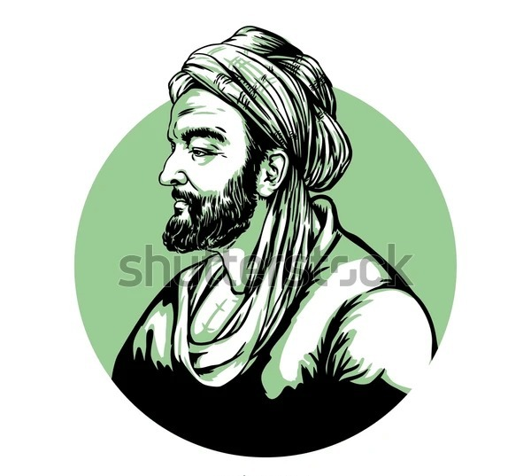
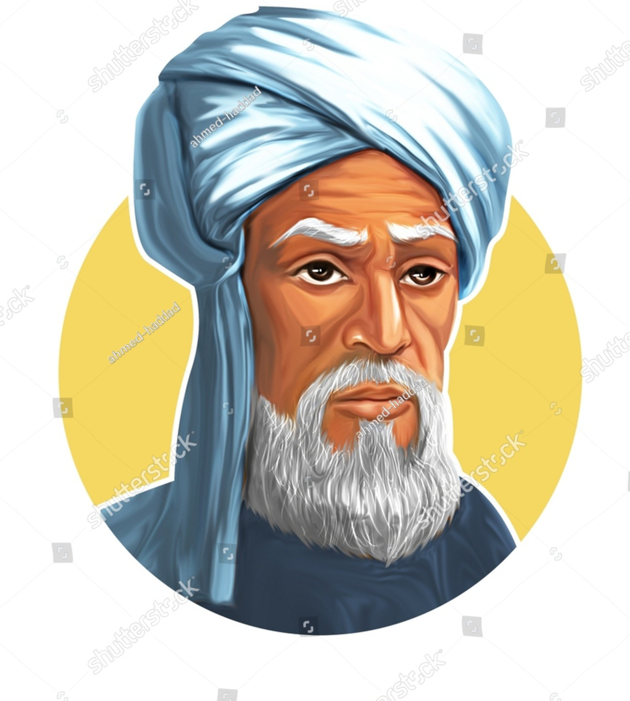
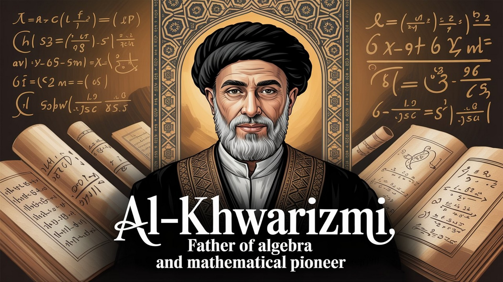
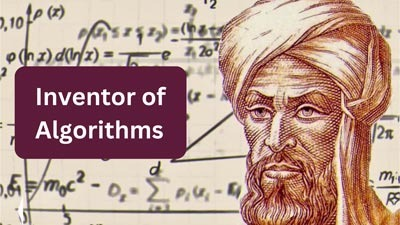
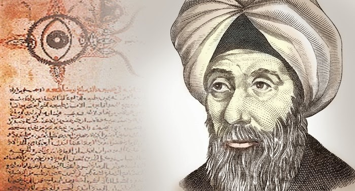
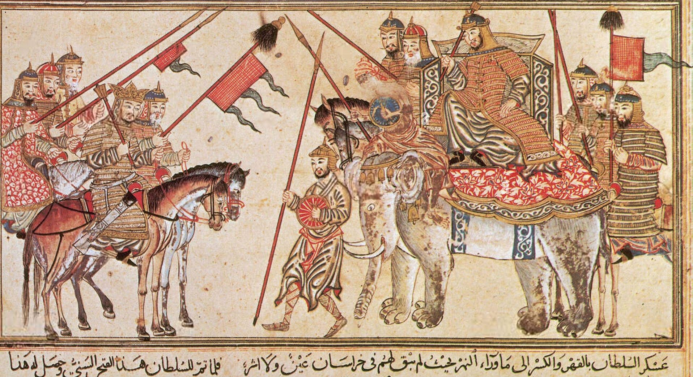
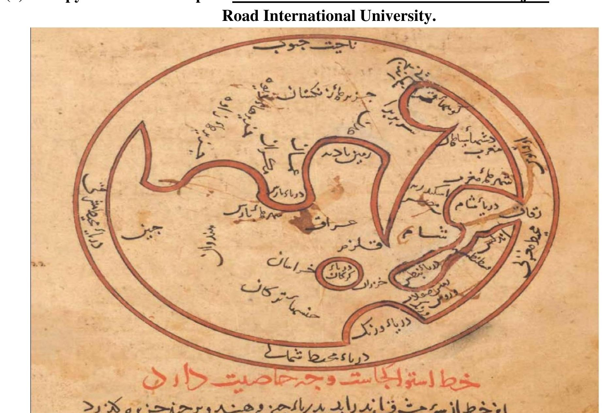
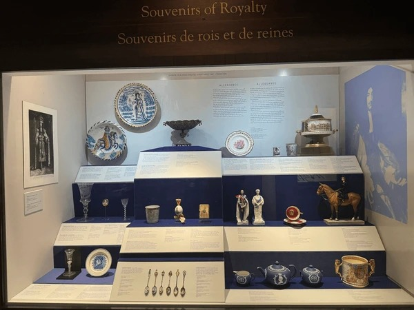
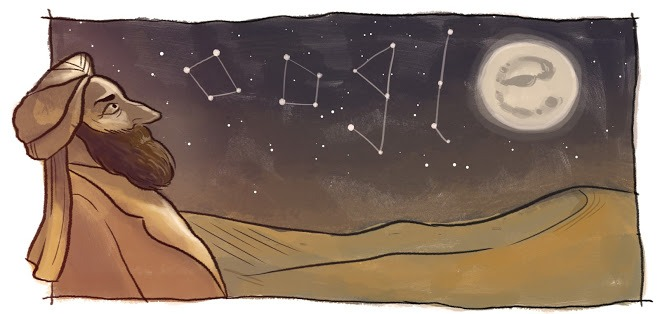

Luminaries of Knowledge
Journey through the minds of Muslim scientists who shaped our understanding of the world
Golden Age Timeline
750 CE
Beginning of Abbasid Caliphate
825 CE
House of Wisdom Established
900 CE
Peak of Scientific Achievement

Ibn Sina
The Prince of Physicians
Also known as Avicenna, Ibn Sina was a Persian polymath who is regarded as one of the most significant physicians, astronomers, thinkers and writers of the Islamic Golden Age. His most famous work, "The Canon of Medicine," was a standard medical text at many medieval universities.
Key Achievements
- • Authored "The Canon of Medicine" used for 600+ years
- • Pioneered the scientific method in medicine
- • Wrote extensively on philosophy and astronomy
Major Discoveries
The Canon of Medicine
An encyclopedia of medicine which systematically organized medical knowledge from ancient and Islamic sources. It was used as a standard medical textbook in Europe for over 600 years and introduced new clinical approaches to medicine.


Philosophical Works
His philosophical encyclopedia, "The Book of Healing," became a major philosophical text that influenced both Islamic and European thought, particularly on Aristotelian and Neoplatonic philosophy.
Scientific Method
Ibn Sina developed an early scientific method for inquiry, emphasizing empirical observation and experimentation in medicine and other sciences, laying groundwork for modern scientific approaches.

"The seeker of knowledge is always in the path of God until the Day of Judgment."- Ibn Sina

Al Khwarizmi
The Father of Algebra
Muhammad ibn Musa al-Khwarizmi was a Persian polymath who produced vastly influential works in mathematics, astronomy, and geography. His book "The Compendious Book on Calculation by Completion and Balancing" presented the first systematic solution of linear and quadratic equations.
Key Achievements
- • Introduced systematic method for solving equations
- • Pioneered decimal positional number system
- • Compiled astronomical tables used for centuries
Major Discoveries
Algebra
He introduced the systematic method of solving linear and quadratic equations, which is the foundation of modern algebra. The word "algebra" itself comes from the title of his book.


Algorithm
The word "algorithm" is derived from the Latinized version of his name, Algoritmi. His works on Indian numerals introduced the decimal positional number system to the Western world.
Astronomical Tables
Al-Khwarizmi compiled astronomical tables that incorporated Indian and Greek astronomical knowledge, which were used for centuries in the Islamic world and later in Europe.

"That which is closest to things is that which knows their particulars."- Al Khwarizmi

Al Biruni
The Master of Astronomy
Abu Rayhan al-Biruni was a Persian scholar and polymath who made significant contributions to mathematics, astronomy, physics, and natural sciences. He is regarded as one of the greatest scholars of the Islamic Golden Age and his works spanned various disciplines.
Key Achievements
- • Calculated Earth's circumference with remarkable accuracy
- • Invented several astronomical instruments
- • Pioneer in comparative religion studies
Major Discoveries
Earth's Measurements
Al-Biruni calculated the Earth's circumference with remarkable accuracy, arriving at a value within 4% of the modern measurement. He also determined the Earth's radius using trigonometric calculations.


Astronomical Instruments
He invented several astronomical instruments and wrote extensively on their use. His astrolabe designs were particularly influential in medieval astronomy and navigation.
Comparative Religion
Al-Biruni was a pioneer in the study of comparative religion, writing detailed accounts of various religions with remarkable objectivity for his time. His works provided valuable insights into different cultures and beliefs.

"The quest for knowledge is an obligation upon every Muslim."- Al Biruni
By the Numbers
Years of Influence
Scientific Works
Fields of Study
Legacy
Gallery of Discovery




.jpg)

Islamic Golden Age Achievements
Legacy of Innovation
The Islamic Golden Age was a period of cultural, economic, and scientific flourishing in the history of Islam, lasting from the 8th to the 14th century.